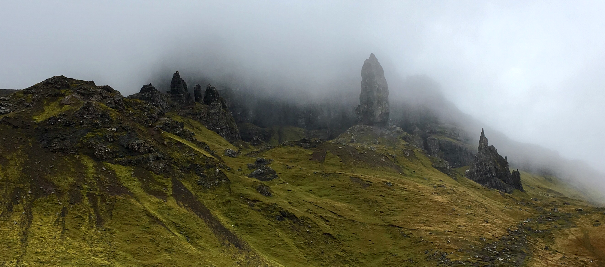

Isle of Skye
Isle of Skye & Inverness, Scotland - October 10, 2017
From Friday until Sunday I was touring both the highlands and the Isle of Skye. It was a long bus ride up in a small, 16-passenger bus but we had a lot of stops along the way like Doune castle (where Monty Python and the Holy Grail, Outlander, & pilot episode of Game of Thrones were filmed), a highland cow farm (I got to feed a cow an apple - did you know that they don't have teeth?), a town called Callander where we climbed up a hill to eat lunch and the town is also the location of the last witch trial in the UK (1941 - Helen Duncan knew military secrets and they couldn't pin treason or spies on her), many stops in the Highlands for photos (my favorite were the 3 hills called the 'Three Sister of Glencoe'), and finally Eilean Donan castle (known for its portrayal in the movie Highlander).
After a long day of sightseeing through the highlands, we had homemade mac 'n cheese for dinner in our accommodation called the Stationmaster's Lodge. The lodge was located in a tiny village called Stromeferry and sat next to a beautiful saltwater Loch (lake) in the highlands. Stromeferry, supposedly, has less than 10 full-time inhabitants, so our tour group tripled the size of the village. It was a really nice accommodation for the number of people, and it felt like living in a cozy cabin in Minnesota.
Saturday was our trip out to the Isle of Skye. We left early and drove about 30 minutes to get to the Isle. Unfortunately the weather wasn't the best, but I had learned after Friday that I needed to bundle up in order to stay both warm and dry. The one positive thing about the misty rain was that it made the photos look ethereal and fairy-like, which matched the location perfectly.
Our first stop was the Fairy Pools, which was a long river that had waterfalls with clear, turquoise water. Normally the water in Scotland is brown and muddy because of the peat in the soil, but the peat had been washed away long ago in this particular area, making the water clear and blue. The landscape was also very orange, which made me happy because it reminded me so much of autumn. I managed to jump through a river that was on the path without soaking my sneakers, but my sneakers weren't able to hold out for the entire day.
What did my sneakers in was the hike up to the Old Man of Storr. The rock is massive and was made through volcanic activity and then erosion, but our guide, Nory, described a story behind the rock where the rock was a sculpture being built by a fairy to honor a human friend of his (hence the name). This particular hike was grueling both because of the steep climb, large rocks to navigate around, and muddy conditions. My sneakers were actually in quite good shape until near the end of the hike, when there was a spot in the path that was mud and there were no rocks in sight. I had to step fully into the mud in order to continue on, so my poor sneakers were quite muddy for last 4 hours of the tour. Although my sneakers didn't survive the hike and my legs were dead from the uphill climb, the photos I got at the top were worth it.
We hopped on the bus and headed over to Kilt Rock, which looks like the Scottish coast but in the distance there was a rock that has the cross-pattern of a tartan. After a stop at a gas station (where I invested in a pack of new socks to wear for the next few hours), we finished our tour of the Isle of Skye at the Fairy Glen. The Fairy Glen was absolutely mystical. There are a bunch of little hills with lots of grazing sheep and it looks almost like a scene out of the Hobbit. In the middle of the glen there is a stone circle where, supposedly, you can give something that you cherish to the fairies in return for a wish. I gave it a go and (as requested by Nory), put a piece of hair on the center stone and wished for my sneakers to get back to normal once I got home. I'm not sure if it was because of the fairies or just dumb luck, but I was able to wash basically all the mud from my sneakers when I got back to the accommodation and then the remaining stains on Monday using laundry detergent.
Saturday evening I finally got to try haggis, neeps, and tatties. I went for the vegetarian haggis, which tasted like if stuffing was made with quinoa. The neeps (turnips) tasted like watery dirt (which wasn't a surprise honestly), and the mashed potatoes were delicious as always.
Finally, we headed back to Edinburgh on Sunday morning. Our first stop was Loch Ness, where a handful of people decided to go swimming (even though it was just above freezing in the lake). I can officially say I've been in Loch Ness because I dipped my finger into the water. ;) We mostly drove the whole day, but we had a nice stop at a cafe for lunch and a coffee/cake shop for a mid-afternoon snack (which was super delicious). Our last stop of the tour was Glenfinnan Viaduct, which is where the train for Harry Potter was filmed.
Overall, it was an amazing trip despite the rainy, cold weather. Even though I was not prepared for the weather or hiking, I had an enjoyable time being outdoors. Nory would always comment how "I was the most outdoorsy person he knew" just to make me feel better about hiking. It was definitely a once-in-a-lifetime opportunity to see the Isle of Skye and all the magical locations on the isle.
Cheers!
- Caileigh Marshall